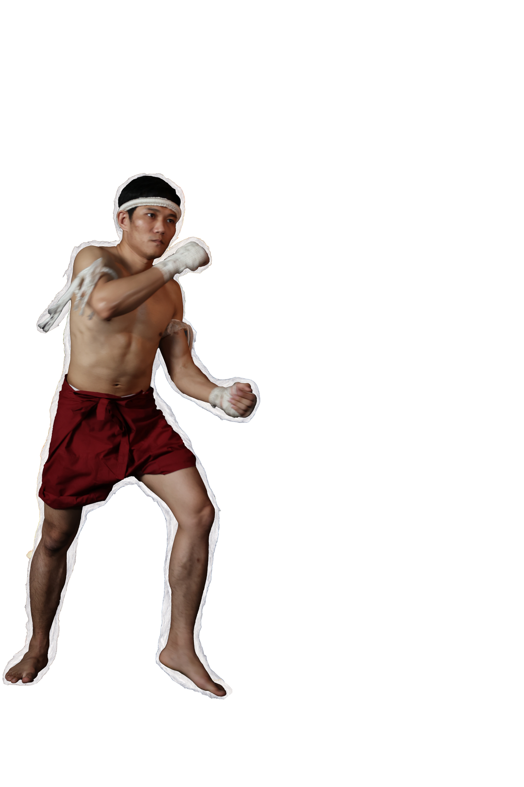
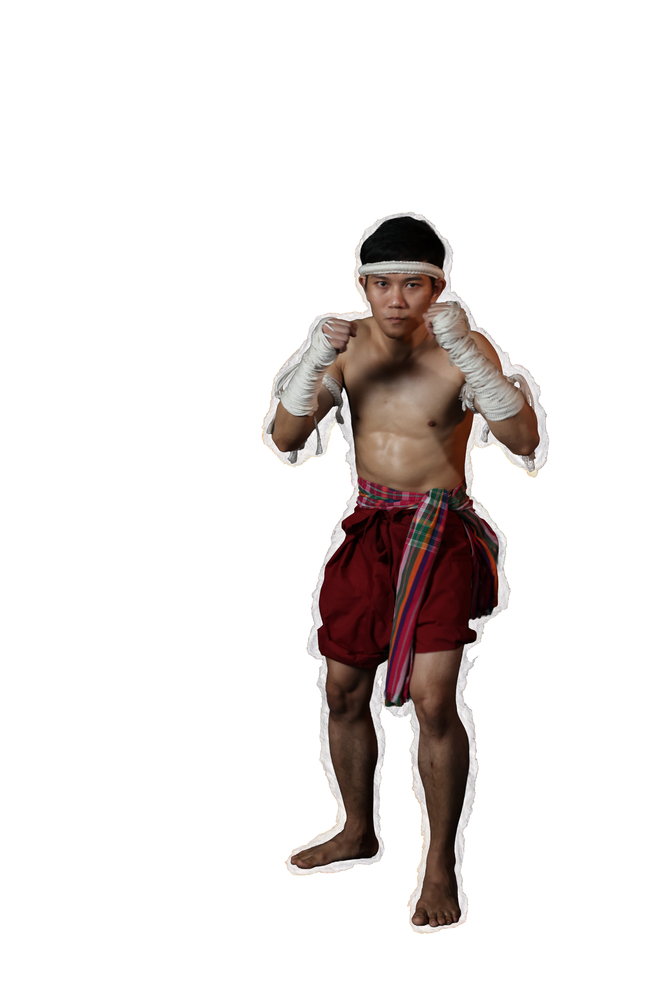
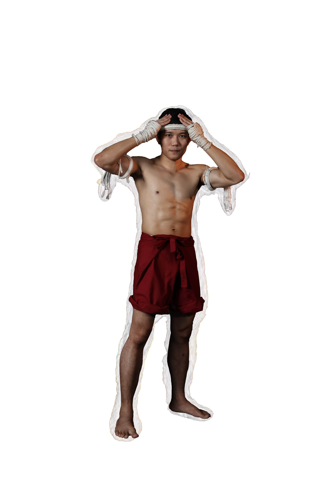
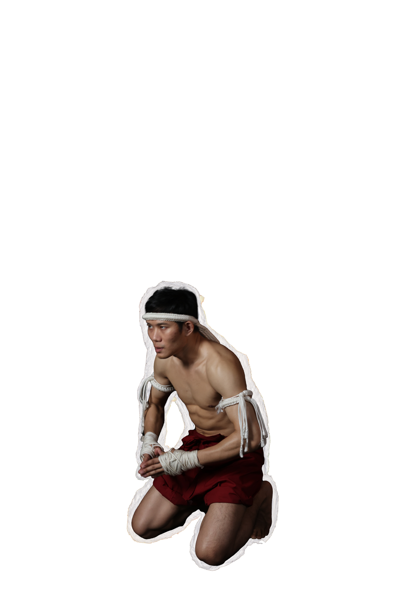

Although not yet distinctly classified as "Muay Boran", historical evidence confirms the use of limbs as weapons within the military, marking the inception of unarmed combat.
Muay Thai was integrated into the royal curriculum to instill bravery and physical fitness. Notable examples include Prince Ruang's training at the Samor Khon School and King Ramkhamhaeng's treatise on warfare, which referenced Muay Thai and weaponry.
Sukhothai Era


Muay Thai became integral to royal ceremonies and soldier selection. The foundations of the "Muay Boran 4 Regions"styles.
North-Lopburi

Northeast-Korat

South-Chaiya

Central-Tha Sao

were established during this period, as continuous warfare necessitated diverse fighting techniques. Boxing matches were held during festivals and royal events. King Naresuan the Great was a notable practitioner who established the "Royal Boxing Department" to recruit skilled fighters as elite "Select Soldiers" (Thahan Lueak) for royal protection.

A legendary figure, Nai Khanom Tom, a Thai captive in Burma, defeated ten Burmese boxers consecutively in 1774. His victory spread his fame, earning him the title "Father of Muay Thai", with March 17th celebrated as National Muay Thai Day.
Ayutthaya Era

Ancient Muay Thai varies by region, each with unique characteristics, summarized by the saying: "Heavy Punch Korat,Smart Lopburi, Good Posture Chaiya, Faster ThaSao."
Muay Boran: The 4 Regional Styles


Distinguished by wrapping ropes from the elbows down to the fists.This technique supports its signature style, which features wide, powerful kicks and the "Buffalo Swing" punch, providing effective defense against heavy strikes.
"Buffalo Swing"

"Muay Korat" (Northeast)


Known as "Muay Kiao", this style emphasizes intelligence, agility, and precision. Fighters use accurate straight punches, move constantly, and employ deceptive feints.

A unique characteristic is the hand wrapping that covers half the arm, and distinctively, the ankles.
"Muay Lopburi" (Central)


Stance

Three-Step
Movement
(Yang Sam Khum),

Wai Kru Dance

Rope Wrapping
Attire, Training

A local martial art of Chaiya District, Surat Thani. It possesses 7 unique identities
and Mae Mai techniques. Key moves include
"Pan Mat"

"Kradot Top Sok"

Its primary defensive philosophy is
"Pong"
(Block)

"Pat"
(Parry)

"Pit"
(Close)

"Poet"
(Open)

"Muay Chaiya" (South)


Characterized by speed, agility, and decisiveness. The style features beautiful yet effective postures, particularly in
kicking and elbow strikes


Fighters train in "Four-Directional Hand"

Defensive and attack techniques


"Muay Tha Sao" (North)


During the period of national restoration following liberation, Muay Thai was practiced primarily for warfare. Renowned fighters included Nai Mek Ban Tha Sao and Nai Thiang Ban Keng. King Taksin the Great’s elite guards, such as Phraya Phichai Dap Hak, were c also skilled practitioners.

Matches were typically held between fighters from different regions or schools without a point system, continuing until one side yielded. These bouts took place on dirt rings near temples, with fighters using rope bindings (Kad Chueak) and wearing auspicious headbands (Mongkhon) and armbands (Prajiad).
Thonburi Era


Thai monarchs favored Krabi Krabong and Muay Thai. The reign of King Rama V is considered the "Golden Age of Muay Thai." The King, a practitioner himself, established royal boxing centers in provinces to standardize training and competitions. In 1887,

the Department of Education was founded, and Muay Thai became a mandatory subject in teacher training schools and the Chulachomklao Royal Military Academy.Muay Boran continued to be practiced at temple fairs with emerging regulations, such as hand-wrapping (Kad Chueak).

Early Rattanakosin Era (Rama I - Rama V)


Training camps emerged, and the transition from rope bindings to gloves began due to Western influence. Matches were organized for royal entertainment and against foreign boxers.


During the reign of King Rama VII, rope bindings were still used until a fatality occurred in the ring (Nai Phae Liangprasert killed Nai Chia). Consequently, regulations were amended to mandate the use of gloves.
The establishment of Lumpinee and Rajadamnern stadiums marked the standardization of "Modern Muay Thai," gradually diminishing the role of regional styles in the professional circuit.
Mid-to-Late Rattanakosin Era


Muay Boran serves as the cultural and historical foundation of Muay Thai, preserved through the Wai Kru historical foundation of Muay Thai, preserved through the Wai Kru ceremony and educational institutions.


institutions. Professional Muay Thai has evolved into a globally recognized combat sport and a key element of Thailand's "Soft Power". A significant milestone includes the demonstration matches held at the Olympic Park in Paris during the 2024 Olympics, representing a major step towards inclusion in the Summer Olympics.
Present Day